Isoform co-expression network analysis with PacBio MAS-Seq
isoform_pbmcs.Rmd** WARNING** This tutorial is under construction, and we do not advise running it at this point in time.
This tutorial covers the basics of using hdWGCNA to perform isoform co-expression network analysis using PacBio MAS-Seq data. We start from the genes by cells and isoforms by cells counts matrices, and cover how to perform clustering analysis in this long-read single-cell data using Seurat, and then we demonstrate several different ways to use hdWGCNA for isoform co-expression network analysis. Here we use a MAS-Seq dataset of PBMCs from two donors, sequenced using the Revio platform. Before working through this tutorial, we recommend becoming familar with the basics of hdWGCNA using our single-cell tutorial.
Download the tutorial data
Here we download the genes and isoforms counts matrices from PacBio for the two replicates using wget.
# download replicate 1
wget --recursive --no-parent https://downloads.pacbcloud.com/public/dataset/MAS-Seq/DATA-Revio-PBMC-1/4-SeuratMatrix/
# download replicate 2
wget --recursive --no-parent https://downloads.pacbcloud.com/public/dataset/MAS-Seq/DATA-Revio-PBMC-2/4-SeuratMatrix/Seurat clustering analysis
In this section, we will perform clustering analysis on MAS-Seq dataset using Seurat. In principal, this analysis could also be performed using alternative pipelines such as Scanpy before performing network analysis. We perform the standard clustering steps including quality control (QC) filtering, normalization, feature selection, linear dimensionality reduction (PCA), batch correction (harmony), non-linear dimensionality reduction (UMAP), and louvain clustering. Here we perform the clustering analysis using the gene counts matrix and the isoform counts matrix separately to compare the differences.
Create a multi-assay Seurat object
The MAS-Seq dataset includes both gene and isoform level quantifications, and in this section we will load these matrices for both replicates to create a multi-assay Seurat object. The number of isoforms detected differs for each replicate, and here we have chosen to only include isoforms that were detected in both replicates.
library(Seurat)
library(tidyverse)
library(harmony)
library(Matrix)
library(patchwork)
library(cowplot)
library(RColorBrewer)
library(viridis)
library(ggpubr)
theme_set(theme_cowplot())
set.seed(12345)
# directories with the counts matrices for each replicate
sample_dirs <- c(
'DATA-Revio-PBMC-1/4-SeuratMatrix/NoNovelGenesIsoforms/',
'DATA-Revio-PBMC-2/4-SeuratMatrix/NoNovelGenesIsoforms/'
)
names(sample_dirs) <- c('PBMC-1', 'PBMC-2')
# load isoform counts matrices for each sample:
iso_X_list <- lapply(sample_dirs, function(x){Seurat::Read10X(paste0(x, 'isoforms_seurat/'))})
# load gene counts matrices for each sample:
gene_X_list <- lapply(sample_dirs, function(x){Seurat::Read10X(paste0(x, 'genes_seurat/'))})
# only keep isoforms that are common in all samples:
common_iso <- Reduce(intersect, lapply(iso_X_list, function(x){rownames(x)}))
iso_X_list <- lapply(iso_X_list, function(x){x[common_iso,]})
# create individual Seurat objects for each sample
seurat_list <- lapply(1:length(sample_dirs), function(i){
cur <- Seurat::CreateSeuratObject(gene_X_list[[i]], min.cells=5);
# add a column for the original barcode
cur$barcode <- colnames(cur)
# add a column indicating the sample name
cur$Sample <- names(sample_dirs)[[i]]
# add the iso assay to the seurat object to contain the isoform counts matrix
cur[["iso"]] <- Seurat::CreateAssayObject(counts = iso_X_list[[i]], min.cells=5)
cur
})
# merge replicates into one Seurat object
seurat_obj <- Reduce(merge, seurat_list)
# save the unprocessed Seurat object
saveRDS(seurat_obj, file = 'PBMC_masseq_unprocessed_seurat.rds')
# check basic info about this seurat object
seurat_objAn object of class Seurat
225080 features across 17637 samples within 2 assays
Active assay: RNA (19877 features, 0 variable features)
1 other assay present: isoWe have successfully created a Seurat object with two assays, iso containing the isoform counts counts matrix, and RNA containing the gene counts matrix. The iso assay contains 225080 different isoforms, and the RNA assay contains 19877 genes. The Seurat object has 17637 cell barcodes before QC filtering.
Quality control (QC) filtering
Here we will insepct the distribution of certain QC metrics in order to determine reasonable cutoffs for outlier removal. We can inspect distributions of gene UMI counts, the number of genes detected, isoform UMI counts, and the number of isoforms detected.
# load unprocessed seurat object:
seurat_obj <- readRDS(file = 'PBMC_masseq_unprocessed_seurat.rds')
# violin plots for different QC stats
features <- c('nCount_RNA', 'nFeature_RNA', 'nCount_iso', 'nFeature_iso')
# make a violin plot for each QC metric
plot_list <- lapply(features, function(x){ VlnPlot(
seurat_obj,
features = x,
group.by = 'Sample',
pt.size=0) +
RotatedAxis() +
NoLegend() +
geom_boxplot(notch=TRUE, fill=NA, outlier.shape=NA) +
xlab('') +
theme(plot.title = element_text(size=10, hjust=0.5))
})
# assemble plots with patchwork
wrap_plots(plot_list, ncol=4)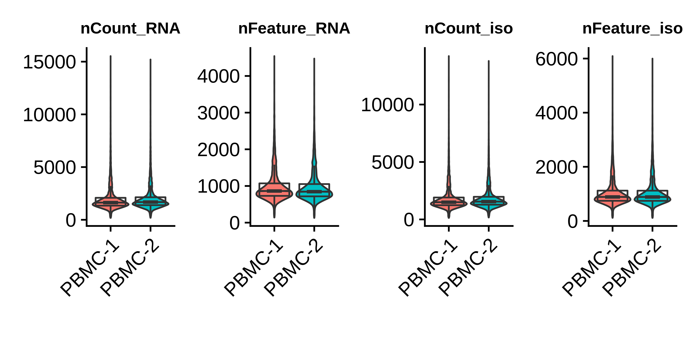
Based on these distributions, we remove barcodes with fewer than 500 gene UMI counts and greater than 5000 gene UMI counts.
# keep cells with greater than 500 UMIs and fewer than 5000 UMIs
seurat_obj <- subset(seurat_obj, nCount_RNA >= 500 & nCount_RNA <= 5000)Clustering on gene counts matrix
In this section, we perform clustering analysis on the gene counts matrix. We use harmony to integrate the two replicates prior to clustering, but we do also include the results without integration. In general this section follows the generic Seurat clustering workflow.
# change the assay to the gene counts matrix
DefaultAssay(seurat_obj) <- 'RNA'
# run normalization, feature selection, scaling, and linear dimensional reduction
seurat_obj <- seurat_obj %>%
NormalizeData() %>%
FindVariableFeatures() %>%
ScaleData() %>%
RunPCA(reduction.name = 'pca_RNA')
# run harmony to integrate the two replicates
seurat_obj <- RunHarmony(
seurat_obj,
group.by.vars = 'Sample',
reduction = 'pca_RNA',
reduction.save = 'harmony_RNA',
assay.use = 'RNA'
)
# run UMAP
seurat_obj <- RunUMAP(
seurat_obj,
dims=1:30,
min.dist=0.3,
reduction='harmony_RNA',
reduction.name = 'umap_RNA'
)
# run clustering
seurat_obj <- FindNeighbors(seurat_obj, dims = 1:30, reduction='harmony_RNA')
seurat_obj <- FindClusters(seurat_obj, resolution = 0.5)
seurat_obj$seurat_clusters_RNA <- seurat_obj$seurat_clusters
# plot clusters and samples on the UMAP
p1 <- DimPlot(seurat_obj, group.by = 'seurat_clusters_RNA', label=TRUE, reduction='umap_RNA') +
NoLegend()
p2 <- DimPlot(seurat_obj, group.by = 'Sample', label=TRUE, reduction='umap_RNA') +
NoLegend()
p3 <- FeaturePlot(seurat_obj, features='nCount_RNA', reduction='umap_RNA', order=TRUE)
# show the plots
p1 | p2 | p3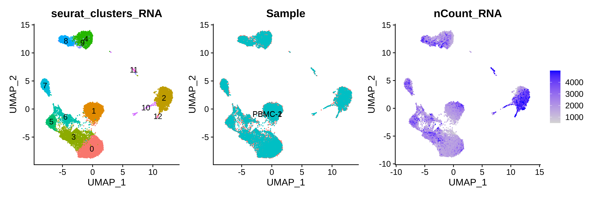
See clustering analysis without Harmony
# run UMAP
seurat_obj <- RunUMAP(
seurat_obj,
dims=1:30,
min.dist=0.3,
reduction='pca_RNA',
reduction.name = 'umap_pca'
)
# run clustering
seurat_obj <- FindNeighbors(seurat_obj, dims = 1:30, reduction='pca_RNA', graph.name = c('pca_nn', 'pca_snn'))
seurat_obj <- FindClusters(seurat_obj, resolution = 0.5, graph.name='pca_snn')
seurat_obj$seurat_clusters_pca <- seurat_obj$seurat_clusters
# plot clusters and samples on the UMAP
p1 <- DimPlot(seurat_obj, group.by = 'Sample', label=TRUE, reduction='umap_pca') +
NoLegend()
p2 <- DimPlot(seurat_obj, group.by = 'seurat_clusters_pca', label=TRUE, reduction='umap_pca') +
NoLegend() + ggtitle('PCA')
p3 <- DimPlot(seurat_obj, group.by = 'Sample', label=TRUE, reduction='umap_RNA') +
NoLegend()
p4 <- DimPlot(seurat_obj, group.by = 'seurat_clusters_RNA', label=TRUE, reduction='umap_RNA') +
NoLegend() + ggtitle('Harmony')
# show the plots
(p1 | p2) / (p3 | p4)We can see that the PCA-based clustering separates each replicate, whereas the harmony-based clustering results in clusters originating from both replicates.
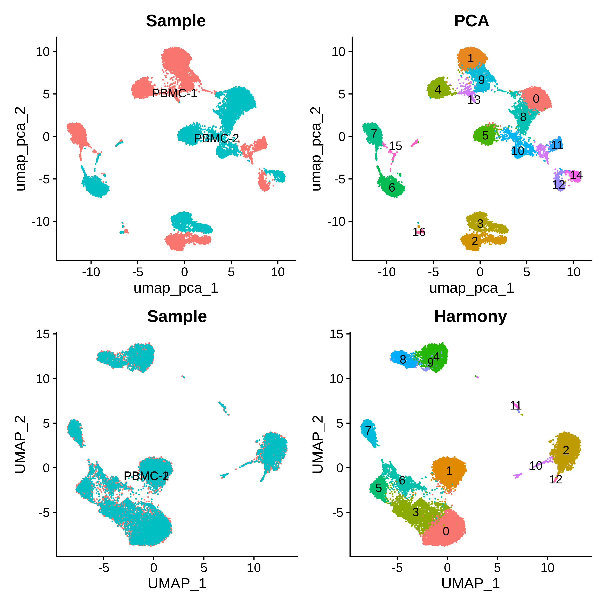
Clustering on isoform counts matrix
In this section, we perform Seurat clustering analysis on the isoform counts matrix. We use nearly the same steps as above with the gene counts matrix, however we tackle the feature selection step in a slightly different way. In this particular dataset, there are many isoforms that are expressed much higher in one replicate or the other, and this variance in expression is picked up by the FindVariableFeatures function. Therefore, running FindVariableFeatures followed by the rest of the clustering steps will result in clusters that separate by replicate, even after running Harmony (we did not show this analysis here, but you could run it yourself as a fun exercise). Instead, we run FindVariableFeatures separately on each replicate and take the intersection of the variable isoforms for further analysis, giving us a set of variable isoforms for the whole dataset. The rest of the steps are identical to the gene-level analysis.
# switch to the isoform assay
DefaultAssay(seurat_obj) <- 'iso'
# log normalize data
seurat_obj <- NormalizeData(seurat_obj)
# Get top 20k variable isoforms in each sample and take the intersection
selected_features <- lapply(SplitObject(seurat_obj, split.by = 'Sample'), function(x){
FindVariableFeatures(x, nfeatures=20000) %>% VariableFeatures
})
VariableFeatures(seurat_obj) <- Reduce(intersect, selected_features)
# scale data and run PCA
seurat_obj <- seurat_obj %>%
ScaleData() %>%
RunPCA(reduction.name='pca_iso')
# run harmony
seurat_obj <- RunHarmony(
seurat_obj,
group.by.vars = 'Sample',
reduction='pca_iso',
assay.use = 'iso',
reduction.save = 'harmony_iso'
)
# run umap
seurat_obj <- RunUMAP(
seurat_obj,
dims=1:30,
min.dist=0.3,
reduction='harmony_iso',
reduction.name='umap_iso'
)
# clustering
seurat_obj <- FindNeighbors(
seurat_obj, dims = 1:30,
reduction='harmony_iso', graph.name = c('iso_nn', 'iso_snn')
)
seurat_obj <- FindClusters(seurat_obj, resolution = 0.5, graph.name='iso_snn')
seurat_obj$seurat_clusters_iso <- seurat_obj$seurat_clusters
# plot clusters and samples on the UMAP
p1 <- DimPlot(seurat_obj, group.by = 'seurat_clusters_iso', label=TRUE, reduction='umap_iso') +
NoLegend()
p2 <- DimPlot(seurat_obj, group.by = 'seurat_clusters_RNA', label=TRUE, reduction='umap_iso') +
NoLegend()
p3 <- DimPlot(seurat_obj, group.by = 'Sample', label=TRUE, reduction='umap_iso') +
NoLegend()
p4 <- FeaturePlot(seurat_obj, features='nCount_iso', reduction='umap_iso')
# assemble with patchwork
(p1 | p2) / (p3 | p4)
We visualize the isoform-level clustering and the gene-level clustering on the isoform UMAP, and we can see that qualitatively there appears to be some overlap in the cluster assignments. Without further analysis, it is not immediately obvious which clustering is better than the other as both seem to separate the major cell populations in the PBMC dataset.
Multimodal clustering with genes and isoforms
Seurat includes functionality for multimodal clustering analysis using an algorithm called Weighted Nearest Neighbors (WNN) to create a cell graph by accounting for information from two assays simultaneously. This has been used by the Seurat authors with CITE-Seq data and RNA + ATAC multiome data with some success, but it is not clear if this would help us better characterize our long-read single-cell data. Here we follow the major steps from the Seurat WNN tutorial to perform a multimodal clustering analysis using both the gene and isoform assays. Note that this analysis first requires you to have already processed both of your assays of interest.
# switch back to genes assay
DefaultAssay(seurat_obj) <- 'RNA'
# run the WNN
seurat_obj <- FindMultiModalNeighbors(
seurat_obj, reduction.list = list("harmony_RNA", "harmony_iso"),
dims.list = list(1:30, 1:30), modality.weight.name = "RNA.weight"
)
# UMAP and clustering, make sure to use the WNN output!
seurat_obj <- RunUMAP(
seurat_obj,
nn.name = "weighted.nn",
reduction.name = "wnn.umap",
reduction.key = "wnnUMAP_"
)
seurat_obj <- FindClusters(
seurat_obj,
graph.name = "wsnn",
algorithm = 3,
resolution = 0.5,
verbose = FALSE
)
seurat_obj$seurat_clusters_wnn <- seurat_obj$seurat_clusters
# plot clusters from each analysis on the respective UMAPs
p1 <- DimPlot(seurat_obj, group.by = 'seurat_clusters_RNA', label=TRUE, reduction='umap_RNA') +
NoLegend() + ggtitle('Gene-level clusters')
p2 <- DimPlot(seurat_obj, group.by = 'seurat_clusters_iso', label=TRUE, reduction='umap_iso') +
NoLegend() + ggtitle('Isoform-level clusters')
p3 <- DimPlot(seurat_obj, group.by = 'seurat_clusters_wnn', label=TRUE, reduction='wnn.umap') +
NoLegend() + ggtitle('Gene + Isoform WNN')
# assemble with patchwork
p1 | p2 | p3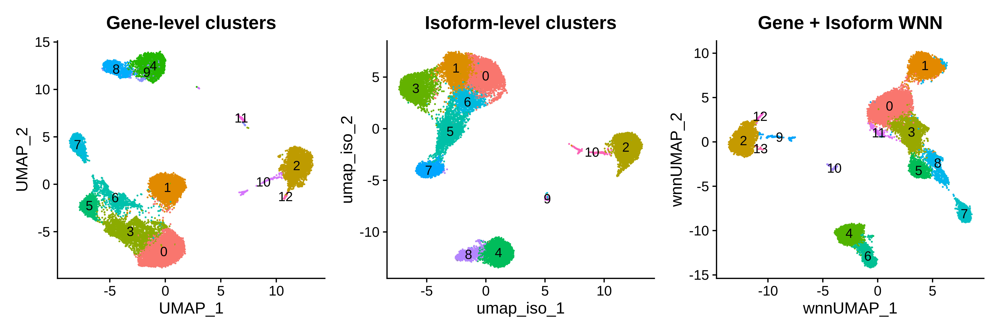
Qualitatively, a side-by-side comparison of the three clustering analysis shows similar results, but we note that your milage may vary depending on your particular tissue or system of interest. WNN outputs cell-specific modality weights that tell us about the relative information content of each cell for that modality. This is a weight between 0 and 1 where close to 0 means most of the
information would come from the isoform assay, close to 1 means most information would come from the gene assay, and close to 0.5 means that both assays provide similar levels of information. Here we visualize the distributions of these weights in each of the WNN clusters.
p <- VlnPlot(
seurat_obj,
features = "RNA.weight",
group.by = 'seurat_clusters_wnn',
sort = TRUE,
pt.size=0) +
NoLegend() +
geom_boxplot(notch=TRUE, fill=NA, outlier.shape=NA) +
geom_hline(yintercept=0.5, linetype='dashed', color='black') +
xlab('WNN clusters')
p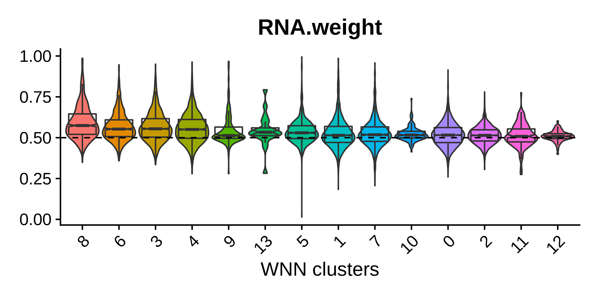
It appears that for the genes + isoforms WNN analysis, there does not seem to be a huge advantage of using the information from both assays simultaneously, as we can see that the median for most of these groups is near 0.5. Cluster 8 has the highest median RNA.weight = 0.574, so this cluster may have been occluded in the isoform-level clustering analysis. We can use a Sankey diagram to compare the clustering assignments from the three separate analyses. Note that this step is not necessary and can be skipped.
# install ggsankey if necessary
# install.packages("remotes")
# remotes::install_github("davidsjoberg/ggsankey")
library(ggsankey)
df <- seurat_obj@meta.data %>%
ggsankey::make_long(seurat_clusters_RNA, seurat_clusters_wnn, seurat_clusters_iso)
p <- ggplot(df, aes(x = x,
next_x = next_x,
node = node,
next_node = next_node,
fill = factor(node),
label = node)) +
geom_sankey() +
geom_sankey_label(size=2) +
theme_sankey(base_size = 16) + NoLegend() +
scale_x_discrete(labels=c(
'seurat_clusters_RNA' = 'Genes',
'seurat_clusters_wnn' = 'WNN',
'seurat_clusters_iso' = 'Isoforms'
))
p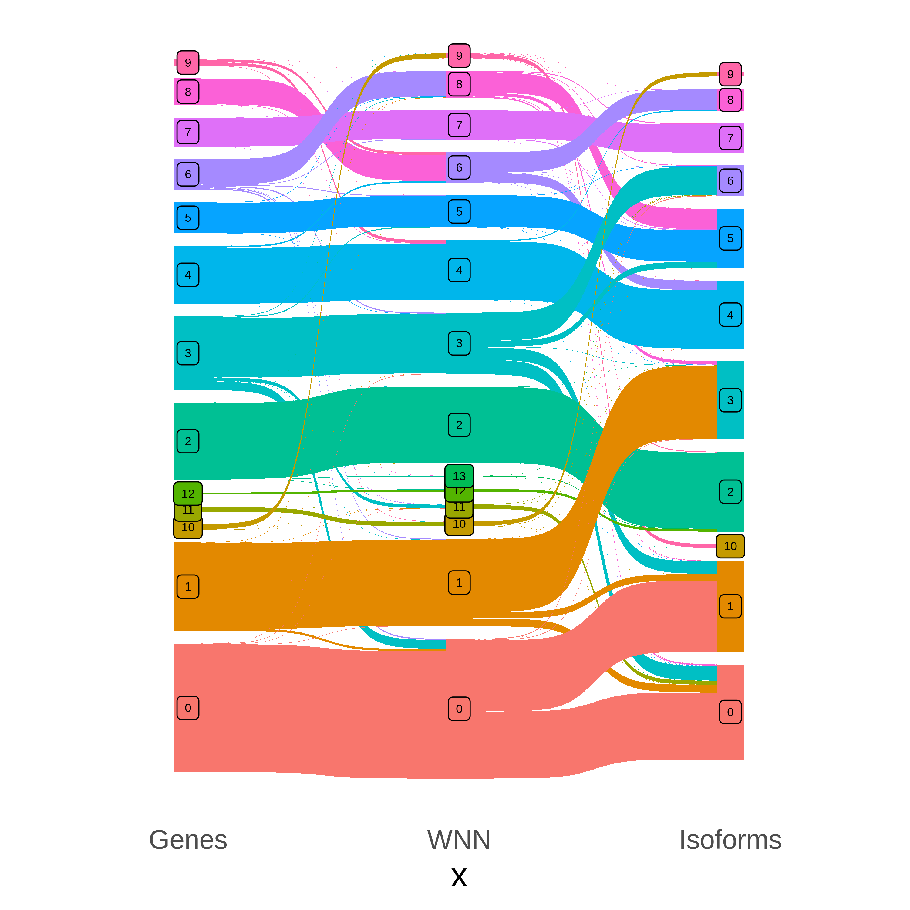
It appears that WNN cluster 8 was grouped together with another cluster in the isoform-level analysis, but it was separated out in the RNA and WNN analyses.
Thus far we have performed three different clustering analyses to demonstrate different ways of analyzing long-read single-cell data, but we want to note that this is not a thorough or quantitative comparison of the different approaches and we ultimately do not have a clear method that is superior. For the remainder of this tutorial, we are going to use the UMAP and clustering from the gene-level analysis, but this could have just as easily been done with the isoform-level clusters or the WNN clusters with likely very similar results.
Cell type annotation
In this section we manually assign cell-type labels to each cluster. We inspected the expression levels of many different known PBMC marker genes which we obtained from Azimuth to assign each cluster with a cell type label. Note that this can also be done automatically using transfer learning algorithms and a reasonable reference dataset.
See cell type marker genes
# list of selected cell type markers for different PBMC populations
# note that this is not a comprehensive list!
markers = list(
'ASDC_mDC'= c('AXL', 'LILRA4', 'SCN9A', 'CLEC4C'),
'ASDC_pDC'=c('SCT', 'PROC', 'LTK'),
'cDC'= c('CD14', 'FCER1A', 'CLEC10A', 'ENHO', 'CD1C'),
'Eryth'= c('HBM', 'HBD', 'SNCA', 'ALAS2'),
'Mature B'= c('MS4A1', 'IGKC', 'IGHM', 'CD24', 'CD22'),
'Memory B'= c('BANK1', 'CD79A', 'SSPN'),
'Naive B'= c('TCL1A', 'IGHD', 'IL4R', 'CD79B'),
'CD14 Mono'= c('LYZ', 'CTSD', 'VCAN', 'CTSS'),
'CD16 Mono'= c('LST1', 'YBX1', 'AIF1', 'MS4A7'),
'CD4 CTL'= c('GZMH', 'CD4', 'GNLY', 'IL7R', 'CCL5'),
'CD4+ Naive T'= c('TCF7', 'LEF1', 'NUCB2', 'LDHB'),
'Proliferating T'= c('PCLAF', 'CD8B', 'CD3D', 'TRAC', 'CLSPN'),
'CD8 TCM'= c('CD8A', 'SELL', 'ITGB1', 'CD8'),
'gDT'= c('TRDC', 'TRGV9', 'TRDV2', 'KLRD1'),
'MAIT'= c('KLRB1', 'NKG7', 'GZMK', 'SLC4A10', 'NCR3', 'CTSW', 'KLRG1', 'CEBPD', 'DUSP2'),
'NK'= c('STMN1', 'KLRC2', 'S100A4', 'CD3E', 'CST7'),
'Plasmablast'= c('TYMS', 'TK1', 'ASPM', 'SHCBP1', 'TPX2'),
'Platelet'= c('GNG11', 'PPBP', 'NRGN', 'PF4', 'TUBB1', 'CLU'),
'Treg'= c('B2M', 'FOXP3', 'RTKN2', 'TIGIT', 'CTLA4'),
'Basophil'= c('KIT', 'CPA3', 'TPSAB1', 'CD44', 'GATA2', 'GRAP2')
)
# make a dotplot for each set of markers
plot_list <- lapply(names(markers), function(x){
DotPlot(
seurat_obj,
features = markers[[x]],
group.by = 'seurat_clusters_RNA'
) + coord_flip() + ggtitle(x)
})
# plot the results and save to a .pdf to inspect the results.
pdf(paste0(fig_dir, 'dotplot_markers.pdf'), width=6, height=3)
for(p in plot_list){
print(p)
}
dev.off()We generated a file called pbmc_annotations.txt containing the following table based on the marker gene expression profiles.
| seurat_cluster | cell_type | annotation |
|---|---|---|
| 0 | T | CD4+ Naive T |
| 1 | T | Proliferating T |
| 2 | Monocyte | CD14+ Monocyte |
| 3 | T | Regulatory T |
| 4 | B | Naive B |
| 5 | T | MAIT |
| 6 | T | CD8+ TEM |
| 7 | T | NK |
| 8 | B | Memory B |
| 9 | B | Naive B |
| 10 | Platelet | Platelet |
| 11 | DC | DC |
| 12 | Monocyte | CD16+ Monocyte |
Next we add this information to the Seurat object and plot the labels on the UMAP.
annotations <- read.table(paste0('data/pbmc_annotations.txt'), header=TRUE, sep='\t')
ix <- match(seurat_obj$seurat_clusters_RNA, annotations$seurat_cluster)
seurat_obj$annotation <- annotations$annotation[ix]
seurat_obj$cell_type <- annotations$cell_type[ix]
# plot clusters and samples on the UMAP
p1 <- DimPlot(seurat_obj, group.by = 'cell_type', label=TRUE, reduction='umap_RNA') +
NoLegend()
p2 <- DimPlot(seurat_obj, group.by = 'annotation', label=TRUE, repel=TRUE, reduction='umap_RNA') +
NoLegend()
# assemble with patchwork
p1 | p2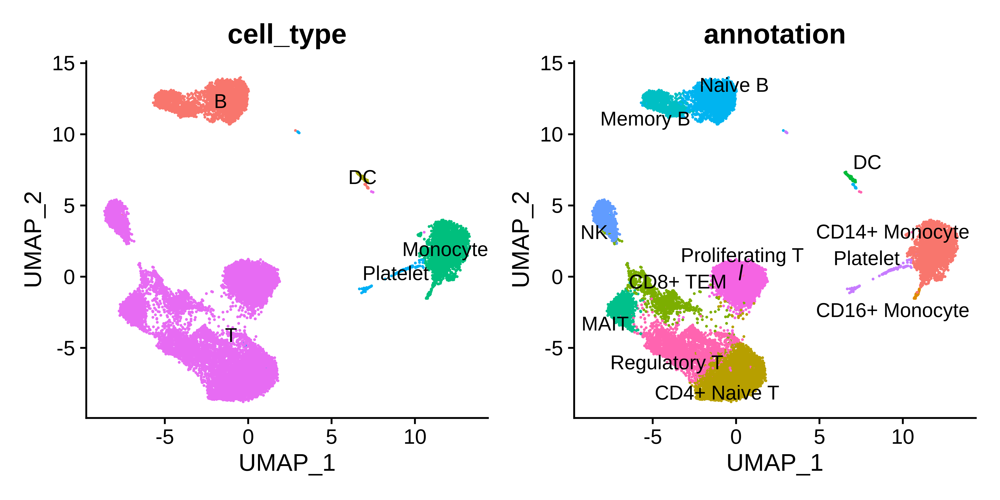
We have now finished the Seurat clustering part of this tutorial, so it is a good idea to save your Seurat object at this point before moving on to network analysis.
saveRDS(seurat_obj, file = 'PBMC_masseq_processed_seurat.rds')Isoform co-expression network analysis
In this section, we perform isofom co-expression network analysis with hdWGCNA. We cover several different approaches in this tutorial. In general, isoform network analysis is more complicated than gene co-expression network analysis since we are working with a larger data matrix to start with. For this dataset, the isoform matrix has roughly ten times the number of features as the gene matrix. Since networks are represented as features-by-features square matrices, it is extremely computationally challenging to compute and represent a full isoform co-expression network. Additionally, many isoforms are expressed at low levels, and like ordinary scRNA-seq we have technical data sparsity as well. For these reasons, we have to carefully consider what isoforms and what cell populations to include in our co-expression network analysis.
- Variable features in all PBMC clusters
- Major isoforms of cluster marker genes in all PBMC clusters
- All major isoforms in NK cells
Before proceeding, we need to remove the very smallest cell populations which could cause trouble in our metacell grouping step. We also need to load the relevant libraries for running hdWGCNA, and we enable multithreading (optional) to speed up our processing time.
library(WGCNA)
library(igraph)
library(hdWGCNA)
enableWGCNAThreads(nThreads = 8)
# re-load processed Seurat object:
seurat_obj <- readRDS('PBMC_masseq_processed_seurat.rds')
# subset to remove the smallest cell types
seurat_obj <- seurat_obj[,!(seurat_obj$annotation %in% c('DC', 'Platelet'))]Example 1: Variable Features in all PBMCs
First, we will demonstrate isoform co-expression network analysis using variable features as our input set of isoforms, and we will use all of the PBMCs. Similar to our clustering analysis, we will identify variable isoforms separately for each sample and take the intersection as our feature set. However, we would like to use more features for network analysis, so we increase the number of variable features to 50000.
# switch to isoform assay:
DefaultAssay(seurat_obj) <- 'iso'
# Get top 50k variable isoforms in each sample and take the intersection
selected_features <- lapply(SplitObject(seurat_obj, split.by = 'Sample'), function(x){
FindVariableFeatures(x, nfeatures=50000) %>% VariableFeatures
})
VariableFeatures(seurat_obj) <- Reduce(intersect, selected_features)
length(VariableFeatures(seurat_obj))[1] 9264This approach gives us 9265 isoforms to perform network analysis on. Next we run the SetupForWGCNA function and indicate that we want to use variable features as our set of input features for network analysis. We also perform metacell aggregation with the MetacellsByGroups function, specifying assay="iso" in order to obtain a metacells by isoforms matrix.
# setup this hdWGCNA experiment
seurat_obj <- SetupForWGCNA(
seurat_obj,
gene_select = "variable",
wgcna_name = "variable",
)
# construct metacells:
seurat_obj <- MetacellsByGroups(
seurat_obj = seurat_obj,
group.by = c("annotation", "cell_type", "Sample"),
k = 50,
max_shared=25,
min_cells=75,
reduction = 'harmony_RNA',
ident.group = 'annotation',
assay = 'iso',
mode = 'sum',
target_metacells=150
)
seurat_obj <- NormalizeMetacells(seurat_obj)Next we specify the cell groups that will be used for network analysis and we set up the expression matrix using SetDatExpr. Note that we are setting group_name = unique(seurat_obj$cell_type) in order to use all of the cell types for a single network analysis. Once again we ensure to specify assay='iso' for the isoform-level analysis. We then run the TestSoftPowers function to find suitable values for the soft_power parameter.
# set up gene expression matrix
seurat_obj <- SetDatExpr(
seurat_obj,
group.by='cell_type',
group_name = unique(seurat_obj$cell_type),
use_metacells=TRUE,
slot = 'data',
assay = 'iso'
)
# test soft powers
seurat_obj <- TestSoftPowers(seurat_obj)
plot_list <- PlotSoftPowers(seurat_obj)
# assemble with patchwork
wrap_plots(plot_list, ncol=2)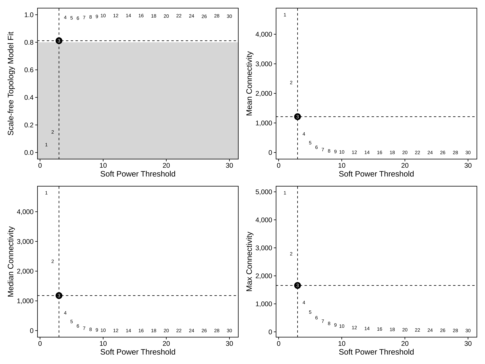
Now we are ready to construct the network, compute module eigenisoforms (MEiso), and compute eigenisoform-based connectivities (kMEiso).
# construct wgcna network:
seurat_obj <- ConstructNetwork(
seurat_obj,
soft_power=5,
setDatExpr=FALSE,
detectCutHeight=0.995,
mergeCutHeight=0.05,
TOM_name = 'variable',
minModuleSize=30,
overwrite_tom = TRUE
)
# plot the dendrogram
PlotDendrogram(seurat_obj, main='hdWGCNA Dendrogram')
# note: we have to run ScaleData or else harmony won't work in the ModuleEigengenes function
seurat_obj <- ScaleData(seurat_obj, features=rownames(seurat_obj)[1:100])
# harmony correction by Sample
seurat_obj <- ModuleEigengenes(
seurat_obj,
group.by.vars = 'Sample',
verbose=TRUE
)
# compute module connectivity:
modules_orig <- GetModules(seurat_obj)
seurat_obj <- ModuleConnectivity(seurat_obj)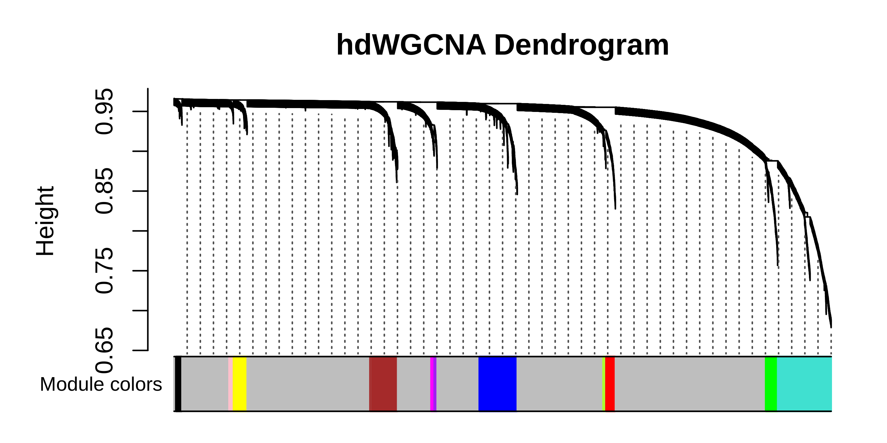
We have now constructed the isoform co-expression network, so we can now perform downstream analysis to better characterize and understand the network and these isoform modules. Before we move on to another way of doing isoform co-expression network analysis, we plot the MEiso values for each module in each cluster with DotPlot, and we use RunModuleUMAP to visualize the isoform co-expression network in two dimensions.
# get the MEisos from the seurat object and add it to the metadata
MEiso <- GetMEs(seurat_obj)
meta <- seurat_obj@meta.data
seurat_obj@meta.data <- cbind(meta, MEiso)
# get a list of features to plot
modules <- GetModules(seurat_obj)
mods <- levels(modules$module)
mods <- mods[mods!='grey']
# make dotplot
p <- DotPlot(
seurat_obj,
group.by='annotation',
features = rev(mods)
) + RotatedAxis() +
scale_color_gradient2(high='red', mid='grey95', low='blue') + xlab('') + ylab('') +
theme(
plot.title = element_text(hjust = 0.5),
axis.line.x = element_blank(),
axis.line.y = element_blank(),
panel.border = element_rect(colour = "black", fill=NA, size=1)
)
# show plot
p
# restore the original metadata
seurat_obj@meta.data <- meta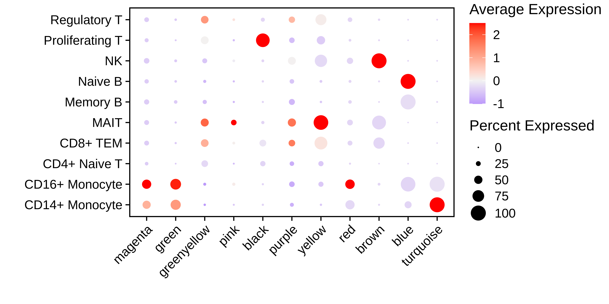
seurat_obj <- RunModuleUMAP(
seurat_obj,
n_hubs =5,
n_neighbors=15,
min_dist=0.2,
spread=1
#supervised=TRUE,
#target_weight=0.5
)
# get the hub gene UMAP table from the seurat object
umap_df <- GetModuleUMAP(
seurat_obj
)
# plot with ggplot
p <- ggplot(umap_df, aes(x=UMAP1, y=UMAP2)) +
geom_point(
color=umap_df$color,
size=umap_df$kME*2
) +
umap_theme()
pdf(paste0(fig_dir, 'variable_test_hubgene_umap_ggplot_uns.pdf'), width=5, height=5)
p
dev.off()
png(paste0(fig_dir, 'variable_coex_umap.png'), width=6, height=6, units='in', res=500)
ModuleUMAPPlot(
seurat_obj,
edge.alpha=0.5,
sample_edges=TRUE,
keep_grey_edges=FALSE,
edge_prop=0.075, # taking the top 20% strongest edges in each module
# label_genes = umap_df$isoform_name[umap_df$gene_name %in% plot_genes],
#label_genes = c(''),
label_hubs=2 # how many hub genes to plot per module?
)
dev.off()
saveRDS(seurat_obj, file=paste0(data_dir, 'PBMC_masseq_hdWGCNA_wip.rds'))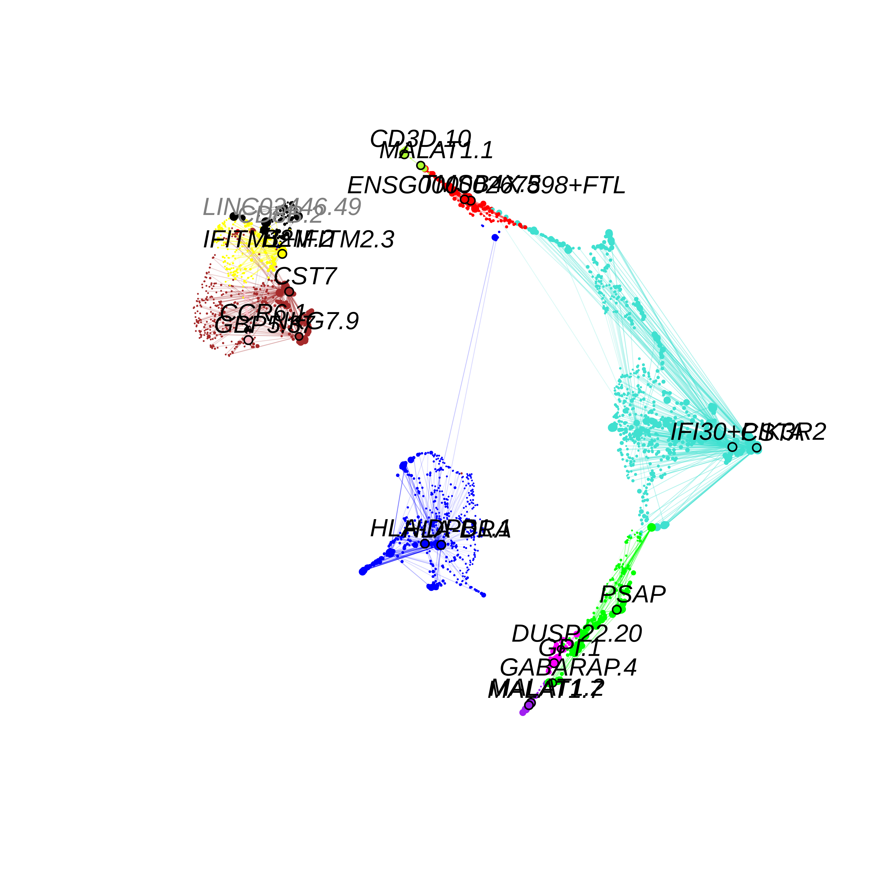
Example 2: Major isoforms of cluster marker genes in all PBMCs
DefaultAssay(seurat_obj) <- 'RNA'
Idents(seurat_obj) <- seurat_obj$annotation
cluster_markers <- FindAllMarkers(
seurat_obj,
logfc.threshold = 0.5,
min.pct = 0.1
)
cluster_markers <- read.csv(file='data/cluster_markers.csv')
#####################################################
# Get Major isoform for each gene in each cell type
#
# TODO: write the documentation for the FindMajorIsoforms function
#####################################################
major_list <- FindMajorIsoforms(
seurat_obj,
group.by = 'annotation',
replicate_col = 'Sample',
isoform_delim = '[.]'
)
cluster_markers <- subset(cluster_markers, !(cluster %in% c('DC', 'Platelet')))
proportion_thresh <- 0.8
lowcount_thresh <- 25
selected_isoforms <- c()
major_list <- list()
for(cur_group in names(pseudobulks)){
print(cur_group)
cur_pb <- pseudobulks[[cur_group]]
cur_pb_genes <- do.call(rbind, strsplit(rownames(cur_pb), '[.]'))[,1]
# loop through each gene:
major_isos <- sapply(unique(iso_df$gene), function(cur_gene){
cur_iso_df <- subset(iso_df, gene == cur_gene)
if(nrow(cur_iso_df) == 1){
return(cur_iso_df$iso)
}
cur_iso_pb <- cur_pb[cur_pb_genes == cur_gene,]
cur_iso_sum <- rowSums(cur_iso_pb)
cur_iso_prop <- cur_iso_sum / sum(cur_iso_sum)
# don't consider isoforms with very few counts
ix <- cur_iso_sum > lowcount_thresh
cur_iso_sum <- cur_iso_sum[ix]
if(length(cur_iso_sum) == 0){
return()
}
# order isoforms from high to low:
cur_iso_prop <- cur_iso_prop[rev(order(cur_iso_prop))]
# identify the set of genes that reach the chosen propotion
prop_sums <- sapply(1:length(cur_iso_prop), function(i){
sum(cur_iso_prop[1:i])
})
ix <- min(which(prop_sums >= proportion_thresh))
# return the set of major isoforms
names(cur_iso_prop[cur_iso_prop >= cur_iso_prop[ix]])
})
major_list[[cur_group]] <- as.character(unlist(major_isos))
}
sapply(major_list, function(x){length(x)})
selected_isoforms <- unique(unlist(major_list))
length(selected_isoforms)
all(as.character(major_list[['NK']]) %in% rownames(seurat_obj))
# subset major isoforms that are marker genes:
major_marker_list <- lapply(names(major_list), function(cur_group){
cur_isos <- major_list[[cur_group]]
cur_genes <- unique( do.call(rbind, strsplit(cur_isos, '[.]'))[,1])
cur_genes <- subset(cluster_markers, cluster == cur_group & gene %in% cur_genes) %>% .$gene
subset(iso_df, gene %in% cur_genes & iso %in% cur_isos) %>% .$iso
})
names(major_marker_list) <- names(major_list)
sapply(major_marker_list, function(x){length(x)})
selected_isoforms <- unique(unlist(major_marker_list))
length(selected_isoforms)
#####################################################
# Run hdWGCNA on major marker isos
#####################################################
# setup for WGCNA
seurat_obj <- SetupForWGCNA(
seurat_obj,
gene_select = "custom",
gene_list = selected_isoforms,
wgcna_name = "major_iso",
)
length(GetWGCNAGenes(seurat_obj))
# construct metacells:
seurat_obj <- MetacellsByGroups(
seurat_obj = seurat_obj,
group.by = c("annotation", "cell_type", "Sample"),
k = 50,
max_shared=25,
min_cells=75,
reduction = 'harmony_RNA',
ident.group = 'annotation',
assay = 'iso',
mode = 'sum',
target_metacells=150
)
seurat_obj <- NormalizeMetacells(seurat_obj)
mobj <- GetMetacellObject(seurat_obj)
seurat_obj <- SetDatExpr(
seurat_obj,
group.by='annotation',
group_name = unique(mobj$annotation),
use_metacells=TRUE,
slot = 'data',
assay = 'iso'
)
length(GetWGCNAGenes(seurat_obj))
#
# genes_use <- GetWGCNAGenes(seurat_obj)
# datExpr <- as.data.frame(
# Seurat::GetAssayData(
# mobj,
# slot='data'
# )[genes_use,]
# )
# datExpr <- as.data.frame(t(datExpr))
#
# all(genes_use %in% colnames(datExpr))
#
#
# gene_list = genes_use[WGCNA::goodGenes(datExpr)]
# all.equal(gene_list, colnames(datExpr))
# all(gene_list %in% colnames(datExpr))
#
# length(gene_list)
# wtf <- gene_list[which(gene_list != colnames(datExpr))]
# wtf %in% genes_use
# datExpr <- datExpr[,gene_list]
seurat_obj <- TestSoftPowers(
seurat_obj,
setDatExpr = FALSE
)
# plot the results:
plot_list <- PlotSoftPowers(seurat_obj)
# assemble with patchwork
pdf(paste0(fig_dir, 'test_softpower_major.pdf'), width=12, height=9)
wrap_plots(plot_list, ncol=2)
dev.off()
# construct wgcna network:
seurat_obj <- ConstructNetwork(
seurat_obj,
setDatExpr=FALSE,
detectCutHeight=0.995,
mergeCutHeight=0.05,
TOM_name = 'major_iso',
minModuleSize=30,
overwrite_tom = TRUE
)
# plot the dendrogram
pdf(paste0(fig_dir, "major_iso_dendro.pdf"),height=3, width=6)
PlotDendrogram(seurat_obj, main='hdWGCNA Dendrogram')
dev.off()
# have to have this ScaleData line or else Harmony gets angry
seurat_obj <- ScaleData(seurat_obj, features=rownames(seurat_obj)[1:100])
seurat_obj <- ModuleEigengenes(
seurat_obj,
group.by.vars = 'Sample',
verbose=TRUE
)
# compute module connectivity:
seurat_obj <- ModuleConnectivity(
seurat_obj,
reassign_modules = FALSE
)
p <- PlotKMEs(seurat_obj, ncol=4)
pdf(paste0(fig_dir, 'major_iso_kME_distributions.pdf'), width=12 , height=8)
p
dev.off()
plot_list <- ModuleFeaturePlot(
seurat_obj,
order=TRUE,
raster=TRUE,
raster_dpi=400, alpha=1, restrict_range=TRUE,
reduction = 'umap_RNA'
)
pdf("figures/major_iso_featureplot_MEs.pdf",height=10, width=15)
wrap_plots(plot_list, ncol=4)
dev.off()
MEs <- GetMEs(seurat_obj)
modules <- GetModules(seurat_obj)
mods <- levels(modules$module)
mods <- mods[mods!='grey']
meta <- seurat_obj@meta.data
seurat_obj@meta.data <- cbind(meta, MEs)
# make dotplot
p <- DotPlot(
seurat_obj,
group.by='annotation',
features = rev(mods)
) + RotatedAxis() +
scale_color_gradient2(high='red', mid='grey95', low='blue') + xlab('') + ylab('') +
theme(
plot.title = element_text(hjust = 0.5),
axis.line.x = element_blank(),
axis.line.y = element_blank(),
panel.border = element_rect(colour = "black", fill=NA, size=1)
)
pdf(paste0(fig_dir, 'major_iso_dotplot_MEs.pdf'), width=8, height=4)
p
dev.off()
seurat_obj@meta.data <- meta
seurat_obj <- RunModuleUMAP(
seurat_obj,
n_hubs =5,
n_neighbors=15,
min_dist=0.2,
spread=1
#supervised=TRUE,
#target_weight=0.5
)
# get the hub gene UMAP table from the seurat object
umap_df <- GetModuleUMAP(
seurat_obj
)
# plot with ggplot
p <- ggplot(umap_df, aes(x=UMAP1, y=UMAP2)) +
geom_point(
color=umap_df$color,
size=umap_df$kME*2
) +
umap_theme()
pdf(paste0(fig_dir, 'major_iso_hubgene_umap_ggplot_uns.pdf'), width=5, height=5)
p
dev.off()
library(igraph)
pdf(paste0(fig_dir, 'major_iso_coex_umap.pdf'), width=8, height=8)
ModuleUMAPPlot(
seurat_obj,
edge.alpha=0.5,
sample_edges=TRUE,
keep_grey_edges=FALSE,
edge_prop=0.075, # taking the top 20% strongest edges in each module
# label_genes = umap_df$isoform_name[umap_df$gene_name %in% plot_genes],
#label_genes = c(''),
label_hubs=2 # how many hub genes to plot per module?
)
dev.off()
# individual module networks
ModuleNetworkPlot(
seurat_obj,
mods = "all",
#label_center=TRUE,
outdir = paste0(fig_dir, 'hubNetworks/')
)
saveRDS(seurat_obj, file = paste0(data_dir, 'PBMC_masseq_major_hdWGCNA.rds'))
seurat_obj <- readRDS(file = paste0(data_dir, 'PBMC_masseq_hdWGCNA_major.rds'))